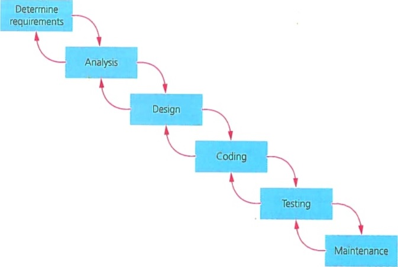
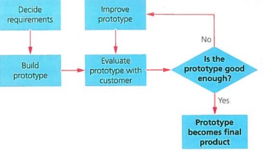
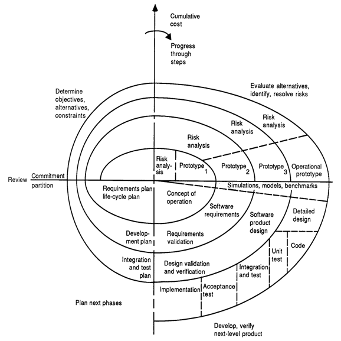

Introduction There are many different methods of developing software at the moment; each containing their individual advantages and disadvantages.
This allows different methods to excel at different scenarios such as a large or small workforce or a short or long timescale. In this essay
I will be elaborating on what makes the models different from each other. Method One - The Waterfall Model
Originating from a paper written by Dr Winston W. Royce in 1970, The Waterfall Model is a very formal,
individually staged way of developing software.

In the first section, the client needs to decide on what they want in their software. There are many ways of gathering this information such as
questionnaires and interviews with either the public (if it’s a service that will be provided to everyone) or the client themselves.
Once this information has been obtained, the requirements need to be analysed by experts to make sure they’re feasible. This could come under a variety of criteria:
Technical: Is the technology needed currently available?
Economical: Will the project be cost efficient?
Legal: Does the project abide by all laws?
Function: Will the project efficiently complete the task?
Time: Will the project be done in an adequate timescale?
In the design section a variety of techniques can be used to make a template of the code; these can include: A data dictionary; Data flow diagrams; Flowcharts
and Structure diagrams. This makes sure the project can be designed on the chosen platform.
Once the program has been coded there needs to be an extensive testing period to make sure it all works. It needs to be tested in white box (tested line by line in editor)
and black box (looking at the outputs) scenarios.
Finally the maintenance section acts on problems found in the testing stage as well as updating and fixing any bugs found in the real world, it can also integrate new technology into
the existing software rather than having to restart.
Advantages
Simple: It’s easy to understand and follow
Manageable: Because the model has such set stages it is easy to plan for and to review
Well documented: lots of documents can add confidence in your product because all questions can be answered without hesitation
Troubleshooting: You can easily highlight the problem area because if a section does not work then the problem has to be in the stage before because you cannot get to the next one without the previous being perfect
Disadvantages
Failed testing: If the testing fails because it does not meet the demands substantial changed have to be made which costs money and lots of time because they were discovered too late
Time: No working prototype is developed until late in the lengthy timescale which means 1) The whole process takes a long time because testing need to be done
2) The clients don’t receive any models for a long time
Backtracking: Once the testing stage has been reached it is very difficult to go back and change what’s already been done
Not for complex: The basic style means that it can only accommodate simple tasks
Not for long: The time needed to produce one prototype means long projects aren’t feasible
The main uses for the Waterfall Model is when the requirements are known and will not change and the timescale is short. Furthermore all the resources needed have to be available at the start of the project to allow for planning.
Method Two- Rapid Application Development (RAD)
RAD was introduced by James Martin in 1981, it uses lots of prototypes evaluated by the client. The prototype is continually updated and improved until all parameters are met.

It was born when developers didn’t like The Waterfall Model because by the time it was completed the technology was out of date. He used the following as his guide:
Requirements are gathered using focus groups and workshops which are easily summarized compared to many interviews and questionnaires.
Prototypes are developed early with less time spent on planning
Frequent feedback given by the client so changes are made quickly
Advantages
Unclear: If the requirements are not clear then you can use RAD to iron out what they want with many different prototypes
Usability: Because the software has been continually tested by the client it should be very easy to use and complete the wanted function perfectly
Requirements: If the requirements change it is very easy to integrate it into the next prototype because there isn’t much planning involved
Feedback: Because of the amount of feedback required the client and the developers are encouraged to work well together which could mean they receive more business in the future
Time: RAD is a very quick solution to development
Disadvantages
Efficient: Because if the constant remodelling of the code and software, the code will not be very efficient because aspects of a previous prototype have been remodelled
Time: The constant need for feedback is demanding on the client's time
Risk: If there is a considerable technological risk then RAD wouldn’t be suitable because less time is spent on planning
Cost: If a project was complicated continually producing prototypes can be expensive and not worthwhile
The uses for RAD is for projects where the requirements are not known and the timescale is short. Furthermore the project has to able to be modularized.
Method 3- RAD Spiral Model
The spiral model was developed by Barry W. Boehm in 1988. It has more focus on risks and how to prevent them than on the standard RAD model. It can be divided into four main stages: Planning; Risk Analysis; Engineering and Evaluation.
Firstly in the Planning stage the client is asked about the requirements they need. It combines techniques from the Waterfall model and the original RAD model. Next the Risk Analysis takes place. Any potential risk that is found has to have an functional alternative that does not compromise the requirements given.
This stage is very important because it means that less prototypes have to be made which saves lots of money. After this the software is coded and created. Once this has been done the program is rigorously tested with white and black box methods to iron out flaws. Once the code passes this stage it gets evaluated which
allows the project to progress to the next spiral.
The main factor of the spiral model is that each requirement has its own spiral in the plan. Once the original foundations have been made you can make the more complex requirements a real item. It can be compared to building a house; you need to add the foundations and the walls before plumbing and electrics can go in.
Once they’re in you can continue on the interior design.

Advantages
Less risk: Ideal for complex projects because of all the risk analysis that is involved and the constant layering of code onto each other
Change: It can easily adapt to changing requirements because prototypes are constantly being replaced
Evidence: Clients get to see the progress early because of the prototypes that get created
Documentation: Lots of documentation is produced from the risk analysis and evaluation of the spirals
Disadvantages
Cost: The many stages of the spiral means that this model can be costly to follow
Expertise: The detailed risk analysis means that highly specific expertise is needed to complete the task
Dependant: The risk analysis is the most important part of this model; if it were to be done incorrectly then the entire project is at risk
Large scale: This model does not work for small projects because it is designed for many smaller modules within a big project
Efficient: The continual remodelling means the code is not efficient
The Spiral Model has specific uses; they’re similar to the standard RAD in that it can accommodate change in the requirements and if the product changes halfway through the timescale. If the risk of the software is high then it is likely that RAD Spiral will be used. However it can only be used when the software can be
modularized and delivered in smaller parts.
Agile- Extreme Programming (XP)
XP is another method that spawned because of problems from the Waterfall model. Developed in 2001 by a group of software engineers, they follow 12 principales:
Working software should be delivered as frequently as possible
Businesses and Developers should work together every day
Motivated individuals should be supported and trusted to get the job done
Face to face meetings are the most constructive way of passing on information
Progress is measured from the amount of working software produced
The workload should be able to continue indefinitely, promoting sustainable development
Excellence in the workforce should be brought to attention
The simpler the outcome, the better
Self organizing teams will always produce the best outcome
Reflection is done regularly to maximize efficiency
Changing requirements are welcome
Customer Satisfaction is gained by quickly producing software
Advantages
Quality: The quality of code that gets produced should be very high because of the many planning stages
Testing: The continuous testing style of this model means that there will be little to no bugs in the program
Rules: All programmers meet every day therefore they have to follow the same rules in order to get on with each other
Sustainable: Because of the constant need for meetings the pace is sustainable so the programmers are less tired
Time: It is much easier to adapt to changes in timescale compared to the Waterfall Model because you can change your iterations rather than starting again
Feedback: The constant testing and meeting means that everyone involved gets feedback on how to improve what they’re doing
Disadvantages
Location: All the programmers need to be based in the same location because of the meetings and for the working in pairs to work
Reps: The customer needs to provide a team of representatives in order to give feedback and be on site all the time
Discipline: Because of the regular meetings and modules within an iteration, programmers need to be disciplined in what they do which can be difficult
Testing: Due to the unstructured nature of the program, testing is much more difficult to do due to the fact that the errors usually won’t just show up on the screen
Agile programming is best suited for programs that do not require a very large amount of staff and have requirements that are constantly changing. If the client requires a basic prototype fast then this would usually be the best route to take.
Summary
After looking at all of these methods it is clear to see where some are much more suited to an environment than others. For example if you were to have an easy task that will not have changing requirements then the Waterfall Model will be the best due to the fact you will not need many prototypes or planning which take up lots of time.
However if the customer is unsure of their requirements and they have a short timescale then RAD would be the way to go. This is because a prototype can be made extremely quickly which is then confirmed or rejected by the client. As this cycle repeats itself the requirements are found and the client is happy. For a more complex, risky project, the RAD Spiral is needed.
This is because of the extensive risk assessments done before any code is generated. Furthermore the repeated iterations means that code is built onto each other therefore can be more reliable. Finally Agile XP can be used when the project needs lots of planning and discussions from the client. It can adapt to change because of the sustainable nature of the model and the process is generally very fast. References